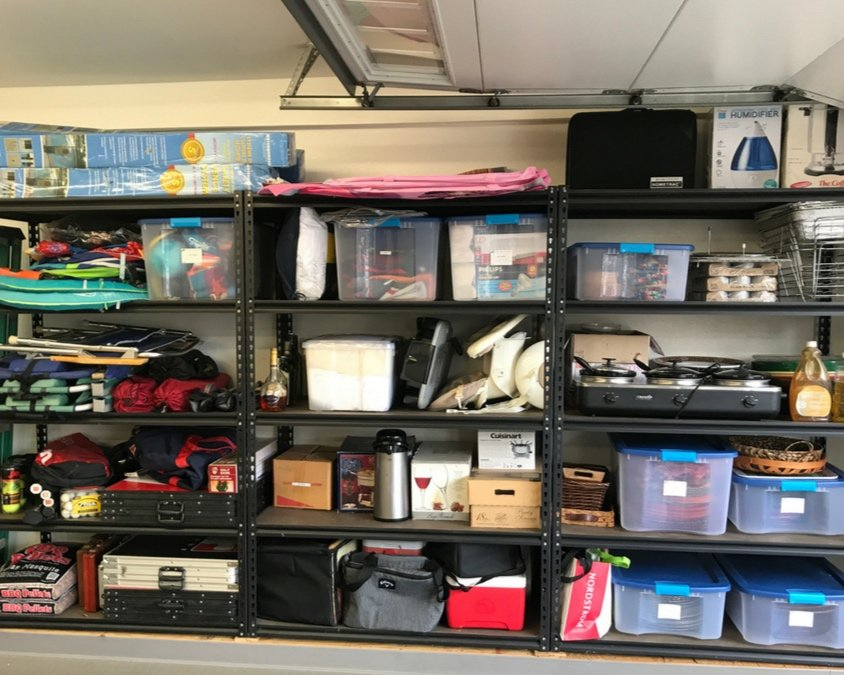
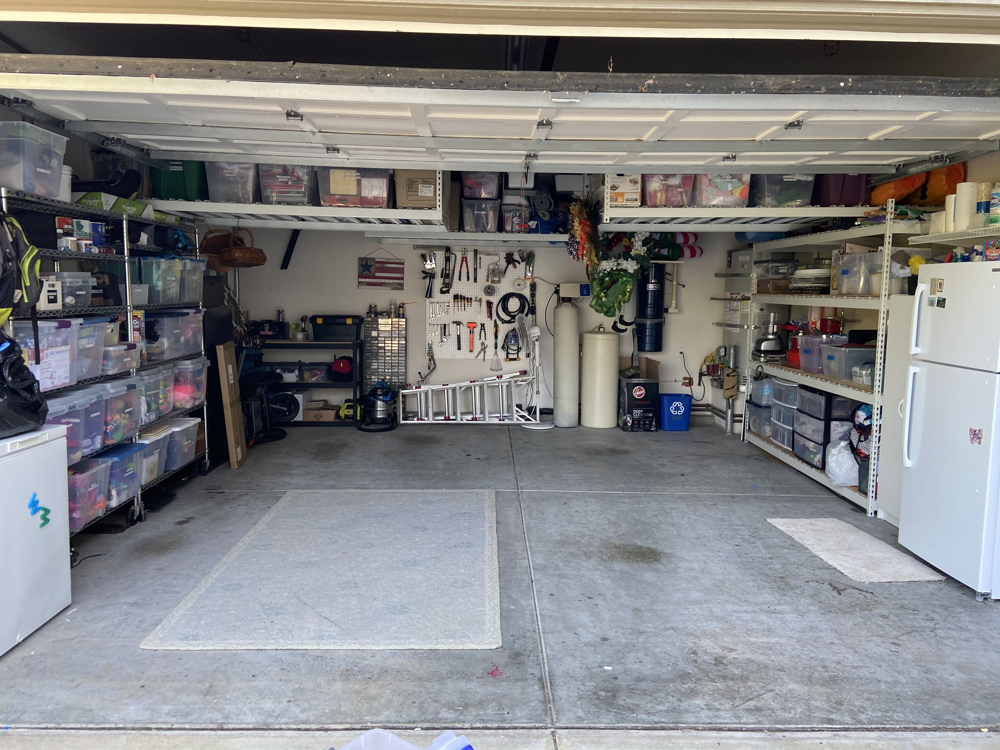

From Chaos to Clarity: A Guide to Organizing Your Garage
The garage often becomes a catch-all space for storing miscellaneous items, leaving little room for parking vehicles or finding what you need. However, with a strategic approach and some elbow grease, you can transform your cluttered garage into an organized and functional space. In this article, we will walk you through a step-by-step process to organize your garage, reclaiming its purpose and making it a haven of efficiency and order.
Step 1: Assess and Declutter Begin by taking stock of everything in your garage. Sort items into categories such as tools, sports equipment, gardening supplies, and seasonal decorations. Assess each item's usefulness and sentimental value. Get rid of broken or unused items by donating, selling, or discarding them. Remember, decluttering is the crucial first step to creating an organized garage.
Step 2: Create Zones Divide your garage into zones based on the activities or items stored. Establish areas for parking, tools, sports equipment, gardening, and seasonal storage. This zoning helps create a logical flow and makes it easier to find and access items when needed. Consider the frequency of use for each category when deciding on the optimal location for each zone.

Step 3: Invest in Storage Solutions
To maximize storage space, invest in appropriate storage solutions. Wall-mounted shelves, cabinets, and pegboards are excellent options for organizing tools and smaller items. Utilize stackable clear bins for storing seasonal decorations or items that are not used frequently. Install hooks or racks on the walls or ceiling to hang bicycles, ladders, or sports equipment, keeping them off the floor and easily accessible.
Step 4: Utilize Vertical Space
Make the most of your garage's vertical space. Install wall-mounted shelving units or cabinets to store frequently used items within reach. Use pegboards to hang tools and smaller items, keeping them visible and easily accessible. Consider overhead storage racks or ceiling-mounted platforms to store large, bulky items like seasonal decorations or bins.
Step 5: Label and Categorize Labeling is a simple yet effective way to maintain an organized garage. Label storage bins, shelves, and cabinets to identify the contents of each. Categorize items within each zone to facilitate easy retrieval. This practice not only saves time but also helps maintain the organization system over the long term.

Step 6: Safety First
Ensure your garage is a safe space by implementing necessary safety measures. Store hazardous chemicals, such as paints and pesticides, in locked cabinets or high shelves, out of reach of children and pets. Install proper lighting to improve visibility. Use nonslip mats or flooring to prevent accidents. Check and maintain garage doors and their mechanisms regularly for safety and functionality.
Step 7: Maintain Regular Maintenance
Organizing your garage is an ongoing process. Schedule regular maintenance sessions to reassess and reorganize as needed. Avoid accumulating unnecessary items and make it a habit to return tools and equipment to their designated places. Regularly sweep the floor, wipe down surfaces, and declutter to prevent clutter from piling up again.
Step 8: Embrace Efficiency As you organize your garage, think about optimizing its efficiency. Arrange frequently used items near the entrance for easy access. Keep similar items together to eliminate searching time. Consider creating a workstation or tool area with a workbench and proper lighting for DIY projects and repairs. Embrace efficiency in your garage layout to save time and enhance productivity.
Transforming your garage from a cluttered mess to an organized space requires dedication and effort. By following the step-by-step process outlined in this article, you can create a functional and efficient garage that meets your needs. An organized garage not only provides ample storage but also improves safety and accessibility. So, roll up your sleeves, start decluttering, and embark on the journey to reclaiming your garage and restoring order and functionality to this valuable space. Your future self will thank you for it!